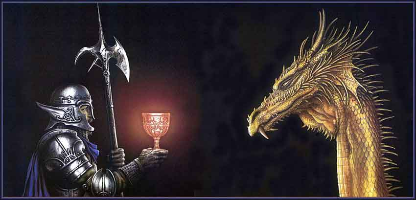

Il Calice dell'Unione
Si tratta di un calice d'oro, poco più grande di una coppa per il vino, con delle incisioni che non raffigurano alcun simbolo particolare.

STORIA
Il Calice dell'Unione è un potentissimo artefatto clericale. Ha poteri curativi unici ed è sacro per la Fratellanza della Luce. Fu costruito congiuntamente da chierici di Loky e di Tanatos come dono per Sua Maestà Loon. Fu consegnato al sovrano quando costui fu nominato primo imperatore del Nordor nel 215 a.n., affinché costui e tutti i suoi successori potessero utilizzarlo in caso di bisogno. Tale potente oggetto magico era il simbolo dell'unione trovata nel territorio dell'Impero tra il culto di Tanatos e quello di Loky, ma ben presto divenne anche il simbolo della relazione tra queste religioni ed il potere politico. Per tali motivi fu spostato dal palazzo dell'Imperatore situato a Nordia ed iniziò una peregrinazione in tutto l'Impero per essere mostrato, per il periodo di 1 mese, presso tutte le principali chiese tanatiane e presso le principali confraternite di Loky. Durante la permanenza e durante lo spostamento era sempre custodito da 2 Difensori della Fede e 2 Paladini di Tanatos che, scelti fra i migliori presenti dell'Impero, ne erano i soli custodi. Folle di fedeli e di curiosi giungevano dalle campagne e dai territori remoti dell'Impero per ammirare questo oggetto di incredibile potenza. Solo gli Imperatori, però, mantennero il privilegio di utilizzarlo anche se nel corso dei due secoli di Impero ciò avvenne poche volte. Quando l'Impero andò in crisi venne costruita una dimora sicura per il calice, segreta e protetta magicamente da tre sigilli, uno di Loky, uno di Tanatos e uno dei maghi alteratori imperiali. Inoltre si narra che una creatura potente e millenaria fu scelta come custode Da allora se ne persero le tracce… Solo intorno all'anno 180 p.n., ossia quasi due secoli dopo la sua scomparsa si dice che alcuni potenti avventurieri guidati da un chierico della Fratellanza della Luce, Reigard, Gran Chierico della confraternita di Hope, lo abbiano ritrovato per aiutare un promettente nobile guerriero del Ducato di Southland, Drax Leòn. Alla morte di costoro, comunque, il luogo di dimora del Calice dell'Unione è divenuto nuovamente segreto, nonostante c'è chi vocifera che sia stato spostato per scelta delle autorità lokiane e tanatiane in un altro luogo del Nordor.
POWERS
Costanti:
Il calice emana un'area di protezione dal male nel raggio di 3 m., le creature malvagie ne avvertono subito la fonte e ne sono infastidite.
Invocati:
Il Calice contiene al massimo 5 cariche. Le cariche sono attivate versando nel calice il liquido attivatore che se è poi bevuto da una creatura da luogo ad effetti miracolosi:
· Miracolo della guarigione (liquido attivatore : Acqua) : ( 1 carica ) : La creatura che beve dal calice viene curata istantaneamente per tutti i suoi punti ferita, anche le ferite dovute ai critici guariranno ma non cresceranno parti mancanti.
· Miracolo della ricrescita (liquido attivatore : Vino) : ( 1 carica ) : La creatura che beve dal calice vedrà ricrescere le parti non vitali mancanti del proprio corpo, un arto ricrescerà in un mese, una parte più piccola (occhio, mano) in 2d6 giorni. L'effetto svanisce appena la creatura ha recuperato tutte le parti mancanti (non ricresceranno le parti mancanti per motivi genetici dalla nascita).
· Miracolo della ristorazione (liquido attivatore : Sidro) : ( 1 carica ) : La creatura che beve dal calice recupera 1 livello di esperienza perso per risucchio di energia, oppure 1 punto per abilità o fino a 5 punti ferita persi allo stesso modo. L'effetto si produrrà entro un mese dal momento in cui la creatura beve il sidro dal calice.
· Miracolo della cura delle malattie (liquido attivatore : Latte) : ( 1 carica ) : La creatura che beve dal calice viene curata da tutte le forme di malattie anche magiche, compresa la licantropia. La guarigione avviene entro 1-4 giorni dal momento in cui costei beve il latte dal calice.
Maledizione:
· Invecchiamento corporale: Ogni volta che una creatura beve dal calice invecchia magicamente e permanentemente di 1 anno di età.
· Artifact Possession:
Ricerca del possessore: Se il calice non ha un possessore valido, proverà ad impossessarsi di ogni individuo di allineamento good che appartenga ad una classe di personaggi e che lo tocchi (ogni volta che colui che ha toccato il calice riesce a resistere al suo tentativo di dominio, costui non dovrà ripetere la prova di dominio per 1 mese dovendo tirare nuovamente al termine di questo periodo qualora tocchi nuovamente il calice). In ogni caso il Calice proverà a dominare chi, avendo i suddetti requisiti, lo utilizzi (questa prova di dominio va effettuata ad ogni utilizzo). Non appena il Calice riesce ad impossessarsi per la prima volta di una creatura (la quale subirà gli effetti del primo impossessamento), considererà costui come il suo possessore e non cercherà di dominare altre creature fino a che questi non sarà morto o sarà stato impossibilitato ad avere ogni contatto con il calice per un periodo pari ad 1 mese. Se ciò avviene il Calice andrà alla ricerca di un nuovo possessore e quello precedente sarà libero dagli effetti del primo impossessamento.
Prova di dominio: Il calice ha una personalità pari a 42 punti mentre la personalità di un personaggio è data dalla somma di Intelligenza Saggezza e Livello di Esperienza, inoltre i personaggi che possono considerarsi membri del culto di una divinità della Fratellanza della Luce aggiungono alla propria personalità un bonus di +5. Ad ogni tentativo di impossessamento entrambi tirano 1d20 ed aggiungono la loro personalità, se il Calice vince sarà riuscito a dominare il suo possessore.
Effetti del primo impossessamento: il personaggio dominato incrementerà il suo odio contro i non-morti e tutti gli adoratori di Karan, svilupperà lentamente una seconda personalità che lo trasformerà in un cacciatore di non morti. Inizierà a pianificare la propria vita per dare la caccia a queste creature senza quartiere. Inoltre, considererà il Calice come un oggetto di sua proprietà (riterrà di poter decidere chi e quando lo possa utilizzare) e non vorrà mai separarsi dal Calice sentendosi il suo unico custode. Sarà pronto a combattere ed ad utilizzare tutto il suo potere per mantenere il possesso ed il controllo del Calice e vorrà trovarsi sempre nelle sue vicinanze. Questi effetti del primo impossessamento sono permanenti e si applicheranno costantemente fino a che il Calice non andrà alla ricerca di un nuovo possessore.
Impossessamenti successivi: Nei confronti del suo possessore il Calice proverà un ulteriore tentativo di dominio ogni volta che costui usa il calice o permette ad altri di utilizzarlo. Ogni volta che il Calice domina la personalità del suo possessore costui deciderà di partire nel più breve tempo possibile per una missione alla ricerca di non-morti al fine della loro distruzione (cercherà dei non-morti che possano considerarsi per se stesso e per le sue risorse difficili da sconfiggere, ma non impossibili), abbandonando qualsiasi sua precedente attività e portando con se il Calice dell'Unione. Solo quando tale missione si sarà conclusa con un successo totale (tutti i non-morti saranno stati definitivamente distrutti) il possessore potrà considerarsi libero e potrà compiere altre attività (sarà però sempre sotto gli effetti costanti del primo impossessamento).
· Intangibilità: Dal calice possono bere solo le creature di allineamento good, se creature di allineamento diverso utilizzano il Calice (bevendo) dovranno superare un tiro salvezza contro incantesimi altrimenti resteranno pietrificate, se sono neutral e superano il tiro salvezza potranno comunque usufruire degli effetti del calice, le creature evil, invece, non otterranno mai alcun beneficio da questo calice e correranno solo il rischio di essere pietrificate. Si noti che la pietrificazione può avvenire solo qualora il Calice possegga ancora delle cariche attive e che in questo caso la carica si considererà comunque utilizzata a prescindere dal fatto che abbia avuto o meno un qualche effetto.
Modo di ricarica:
Ogni 360 giorni che il calice trascorre in una zona sacra e attiva per Loky (nella stanza di meditazione) o per Tanatos (su un altare consacrato) recupera una carica.
Si noti che per la stretta connessione che il Calice dell'Unione ha avuto con l'Impero del Nordor la ricarica avverrà solo se il calice si trova all'interno dei vecchi confini dell'Impero.
Modo di distruzione:
L'unico modo di distruggere il Calice è quello di portarlo nella dimensione del piano negativo, appena vi entrerà si sgretolerà in polvere.